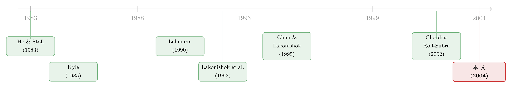

一百万股，到底是买还是卖？——订单失衡里那条会反转的预测线
本文读的是 Chordia & Subrahmanyam (2004, Journal of Financial Economics)：把一整批 NYSE 个股的「日度买卖失衡」算出来后，作者发现昨天的失衡能正向预测今天的收益；但只要把「今天的失衡」也一并放进回归，昨天那一项的系数就会翻成负的。一正一负，并非数据巧合，而是一个「做市商管库存 + 大户拆单」的动态模型推到底之后的必然结果。
1 引言：成交量这把尺子，其实少了一半
「为什么价格会动？」——这大概是金融经济学被问了几十年、却始终绕不开的问题。过去很长一段时间里，人们手里最趁手的那把尺子是成交量（trading volume）。从 Karpoff (1987) 的综述，到 Gallant et al. (1992)、Lo & Wang (2000)，一大批文献都在研究「量」与「价」之间那层若即若离的关系。
但成交量这把尺子，天生就少了一半刻度。
设想某只股票今天成交了一百万股。它可能是「50 万股主动买 + 50 万股主动卖」凑出来的——买卖两边势均力敌、互相抵消；也可能是一整个一百万股全是主动买（或全是主动卖）砸出来的。这两种「一百万股」，对价格的含义天差地别。可在成交量这一个数字里，它们长得一模一样。
于是一个很自然的概念浮出水面：订单失衡（order imbalance）——买方发起的交易减去卖方发起的交易。它至少在两个意义上比成交量多出了信息：其一，一个很大的失衡，会逼着做市商（market maker）为了把库存调回去而调整报价，从而推动价格；其二，如果投资者对某只股票的兴趣是自相关的（今天想买、明天还想买），那么失衡就可能预示着未来的收益。
「订单失衡」这个概念，只有在中介化市场（intermediated market）里才说得通。否则你大可以用那句老话——「有买必有卖」——来反驳：净失衡永远是零。正是因为现代金融理论建立在「做市商承接公众买卖压力」这一范式上（Kyle, 1985；Ho & Stoll, 1983），失衡才成了一个有意义的、能和价格挂钩的变量。
可问题是，在这篇论文之前，几乎没人在一个全面的个股横截面上、用长时段去研究失衡。Lakonishok et al. (1992)、Sias (1997)、Wermers (1999) 研究的是机构的失衡；Blume et al. (1989) 盯的是 1987 年股灾那几天；Lee (1992) 看的是财报公告前后。Chordia & Subrahmanyam 这篇，是第一篇把日度订单失衡铺到一千多只 NYSE 股票、跨越十一年来系统研究的工作。
接着，一个自然的问题是：失衡和收益之间，到底该是什么形状的关系？作者没有上来就跑回归，而是先搭了一个模型——因为只有模型才能告诉你，该把哪几个变量同时放进回归，以及它们的系数符号该长什么样。这一步，正是全文的灵魂。
2 一个两期模型：大户为什么要「拆单」
模型的舞台很小：一只证券在 date 1 和 date 2 交易，然后在清算日支付
$$ \tilde{F} = F + y + e $$
其中 \(F>0\) 是资产的事前均值，\(y\) 与 \(e\) 都是均值为零、相互独立的正态随机变量，方差分别是 \(v_y\) 和 \(v_e\)。这里 \(e\) 代表长期持有资产的风险，\(v_e\) 越大，做市商越不愿意长期扛着头寸。
台上有三类人：
- 知情交易者（informed traders，质量为 \(M\)）：在 date 2 交易之前精确地学到 \(y\) 的实现值；
- 做市商（质量为 \(1-M\)）：对 \(y\) 一无所知，被动承接；
- 两类流动性交易者：一个有「自由裁量权」的大户，总需求为 \(2z_1\)，他可以选择把单子平摊到两期、或集中在某一期下；另有一笔外生（非自由裁量）的流动性单 \(z_2\) 在 date 2 到达。
所有人都是均值—方差偏好，共同的风险厌恶系数为 \(R\)。\(z_1, z_2\) 独立同分布、方差均为 \(v_z\)。
2.1 价格的猜想与求解
作者寻找线性均衡，先猜价格是可观测量的线性函数：
$$ P_2 = F + a\,y + b\,z_1 + c\,z_2 $$
$$ P_1 = F + f\,z_1 $$
为什么 \(P_1\) 里只有 \(z_1\)？因为 date 1 时谁也不知道 \(y\)，唯一搅动价格的就是大户在第一期下的那半张单。
知情者和做市商在 date 2 的需求，由标准的均值—方差一阶条件给出：
$$ x_{I2} = \frac{F + y - P_2}{R\,v_e} $$
$$ x_{J2} = \frac{E(y \mid P_1, P_2) - P_2}{R\,\mathrm{var}(y + e \mid P_1, P_2)} $$
直觉很清楚：知情者已经知道 \(y\)，只为残余风险 \(e\) 要价（分母是 \(R v_e\)）；做市商只能从价格里推断 \(y\)，所以分子是条件期望 \(E(y\mid P_1,P_2)\)，分母里还多了一份对 \(y\) 的剩余不确定性。
市场出清的条件，是做市商接下其他所有人的反向头寸：
$$ (1-M)\,x_{J1} = -\,(M\,x_{I1} + z_1) $$
$$ (1-M)\,(x_{J2} - x_{J1}) = -\,[\,M(x_{I2} - x_{I1}) + z_1 + z_2\,] $$
把需求代进出清条件，对照价格猜想，就能解出 \(a, b, c, f\) 四个系数（论文 Lemma 1 给出了它们关于 \(M, v_y, v_e, v_z, R\) 的闭式表达式）。这里我不去抄那串冗长的分式，只点出真正要命的一句话：当 \(b > f\) 时，date 2 的价格会继续顺着 \(z_1\) 的方向走，而不是把第一期的流动性冲击反转掉。
为什么会这样？因为大户的流动性需求是自相关的——第一期买，第二期还在买。做市商在第二期承接的那部分压力，和第一期的压力是相关的，于是价格压力在两期之间「接力」传递了下去。当长期风险 \(v_e\) 相对信息方差 \(v_y\) 足够大时，这个「接力效应」就会压过知情交易带来的反向力量。
下面把这条最核心的价格方程拆开看：
2.2 把失衡定义出来，再读三条结论
作者把订单失衡定义为做市商每期成交的相反数：
$$ Q_1 = M\,x_{I1} + z_1, \qquad Q_2 = M(x_{I2} - x_{I1}) + z_1 + z_2 $$
在「\(v_e\) 足够大」这个条件下，Proposition 1 给出三条环环相扣的结论：
第一，大户在均衡中确实会把单子拆到两期。 因为拆单能最小化他自己的总价格冲击。而一旦人人拆单，均衡的订单失衡就是正自相关的。这一步是后面所有故事的地基。
第二，滞后失衡正向预测价格变动：
$$ \frac{\mathrm{cov}(P_2 - P_1,\; Q_1)}{\mathrm{var}(Q_1)} > 0 $$
而且这个系数随风险厌恶 \(R\) 递增。直觉是：date 1 的失衡，在做市商风险厌恶之下，会在 date 1 制造一个顺方向的价格压力；由于流动性需求自相关，date 2 还有一波与之相关的价格压力。两期压力一correlate，滞后失衡自然就能正向预测未来的价格。注意这里有个深刻的推论——如果做市商是风险中性的，这种可预测性就会消失，因为没人会为承担库存风险索取溢价，也就没有价格压力。换句话说，「失衡能否预测收益」本身，就是一个对「股市里到底有没有库存效应」的直接检验。
但真正关键的一步在于第三条：一旦把当期失衡 \(Q_2\) 也放进来，\(Q_1\) 的系数会反转为负。
$$ E(P_2 - P_1 \mid Q_2,\; Q_1):\quad \text{coeff on } Q_2 > 0,\quad \text{coeff on } Q_1 < 0 $$
这条反转怎么来的？作者的解释精彩极了。当期失衡 \(Q_2\) 其实由两块拼成：一块是创新部分（z₂ 这种全新的、与过去无关的流动性冲击），它要的溢价大；另一块是历史依赖部分（与 \(z_1\) 自相关的那一截），它要的溢价小——因为这部分压力在第一期就已经被部分计入价格了。可是，如果你只用「当期失衡的总量」去解释价格，等于给这两块赋了相同的权重，于是高估了那块「历史依赖部分」的价格冲击。滞后失衡 \(Q_1\) 上那个负系数，干的正是「纠偏」的活——把被重复计算的那部分历史压力减回去。
这条反转有一个不可或缺的前提：失衡必须是自相关的。如果失衡序列不相关，那么多元回归里 \(Q_1\) 的系数，就会和单变量回归里完全一致——既不会变号，也不会缩水。换句话说，「加入当期失衡后滞后项变号」这件事，本身就是失衡自相关的一个指纹。
最后，模型还顺手交代了长期反转：在同样条件下可以证明 \(\mathrm{cov}(\tilde{F}-P_2,\; P_2-P_1) < 0\)。也就是说，自相关失衡推出来的持续价格压力，终究要被反转掉，于是更长的时间窗口上，价格表现出负自相关。这一点恰好和 Jegadeesh (1990)、Lehmann (1990) 在周度、月度个股收益里发现的反转对得上号。
3 识别策略与数据：把「买」和「卖」一笔一笔分出来
模型给出了清晰的、可证伪的预测，接下来就是去数据里验。但要研究订单失衡，第一道坎是：TAQ 里的成交记录并没有标明哪笔是买、哪笔是卖。
作者用的是市场微观结构的「行业标准」——Lee & Ready (1991) 算法：成交价高于当时买卖报价中点的，记为买方发起；低于中点的，记为卖方发起；恰好落在中点的，用上一笔的价格变动方向（tick test）来定。在此基础上构造两个失衡测度：
OIBNUM：（买方发起笔数 − 卖方发起笔数）÷ 总笔数；OIBVOL：（买方发起的美元成交额 − 卖方发起的美元成交额）÷ 总美元成交额。
之所以要除以总笔数或总成交额，是为了剥离掉总交易活跃度——活跃的大盘股天然会有更大的绝对失衡，标准化之后才能横向比较。
数据来自两个库拼接：ISSM（1988–1992）和 NYSE 的 TAQ（1993–1998），只用 NYSE 股票以避免不同交易制度带来的干扰。样本经过一套相当仔细的过滤：剔除中途从 Nasdaq 转板的公司、剔除 ADR / 封闭式基金 / 优先股 / REITs 等非普通股、剔除月末价格高于 $999 的股票、剔除拆股 / 分红 / 回购 / 增发当天。最终覆盖 1100 多只股票、2700 多个交易日。
这里还有一个常被忽略、却被作者郑重处理的细节——买卖价差跳动（bid–ask bounce，Blume & Stambaugh, 1983）。一个很高的买入失衡，意味着当天大量成交发生在卖价（ask）一侧；如果你直接用收盘成交价算次日收益，这种「成交价在买卖价之间来回弹」的机械效应，会污染失衡与次日收益的关系。作者的办法是：穿过整个交易数据库，取每只股票每天第一笔与最后一笔成交对应的买卖报价中点，用中点算 开盘到收盘（open-to-close）的收益。全文的实证都建立在这套中点收益序列上。这是一个很「干净」的处理——它把研究的对象从「价格的机械弹跳」拉回到了「价格的真实移动」。
（这种「把成交的机械成分从真实信息里剥出来」的思路，在后来的文献里反复出现，比如 《波动的不对称，原来是「谁在卖」决定的》 就沿着同一条线，去问「谁在卖」如何决定了波动。）
4 主要结果：一正一负，恰如模型所料
实证结论与模型几乎一一对应：
其一，日度失衡是正自相关的。 买入失衡之后，更可能跟着更多天的买入失衡；卖出同理。这正是 Proposition 1 第一条（大户拆单 → 失衡自相关）的直接证据，也是后面一切的前提。
其二，滞后失衡正向预测当日收益。 与「自相关失衡造成的持续价格压力」一致。
其三，也是最漂亮的一条——当期失衡同样正向预测收益；而一旦控制住当期失衡，滞后失衡对收益的正向关系就消失（转负）了。 这与 Proposition 1 第三条分毫不差：滞后项的负系数，纠正了当期失衡里被「重复计价」的那块历史依赖压力。
其四，作者直接检验了一个失衡择时策略：若昨天失衡为正，今天开盘在卖价买入；若昨天失衡为负，今天开盘在卖价做空——日内持有，收盘反向平仓，且整个策略已经把买卖价差成本算进去了。结果是：这类策略能产生统计上显著的利润。但作者很诚实地补了一句——算上散户的佣金，个人投资者大概赚不到；只有交易成本极低的机构才可能榨出这点额外收益。
值得玩味的是，作者强调：这种「赚头」并不一定违背市场有效性。按库存范式，在一连串重卖（或重买）之后，做市商正急于把库存甩出去，于是后来的买家恰好能拿到更有利的成交条件。这点「利润」，本质是承接库存风险的报酬，而非定价错误。
把这条线索连起来看：失衡能预测收益 → 说明存在价格压力 → 说明做市商在为库存风险要价 → 说明日度个股价格里确实有库存效应。这才是全文真正想钉死的那个核心结论。失衡，只是照见库存效应的那束光。
5 文献脉络：从 Kyle 的订单流，到一千只股票的失衡
这篇论文站在两条研究河流的交汇处。
一条是做市商库存的河流。Ho & Stoll (1983) 把做市商建模成一个动态管理库存的风险厌恶者；Spiegel & Subrahmanyam (1995) 进一步研究做市商如何承接外部投资者的买卖压力。另一条是订单流与价格形成的河流，源头是 Kyle (1985)——他把价格变动直接挂到了净（汇总）订单流上。作者敏锐地指出：Kyle 框架其实更适合刻画「一段时间窗口里的有符号失衡」，而非逐笔成交，因为它本就不是一个逐笔序贯交易的理论。

而在「订单失衡」这条支流上，早期的研究都是局部的：Lakonishok, Shleifer & Vishny (1992) 看机构交易对股价的冲击，Chan & Lakonishok (1995) 记录了机构「把一张单子分好几天来填」的行为（这正是模型里「大户拆单」假设的经验依据），Blume, MacKinlay & Terker (1989) 盯 1987 股灾。Chordia & Subrahmanyam 自己更早的 Chordia, Roll & Subrahmanyam (2002) 研究的是市场层面的失衡；而本文把焦点收回到个股层面，并且第一次在一个全面的横截面、长时段上系统检验。
再往后，「把成交单拆开看」的思路开枝散叶。比如 《动量到底是谁干的？——把成交单拆成大小两摞来看》 就沿着「不同规模的订单流」这条线，去追问动量收益究竟由谁推动；而 《做市商的「一本账」》 则把单只股票的库存冲击，扩展成了做市商跨多只股票的联合定价问题。本文，正是这串故事里把「失衡 → 库存 → 收益」这条因果链第一次完整钉牢的那一篇。
6 评论与延伸（Q&A + 研究方向）
(a) 几个可能的疑问
Q：订单失衡和成交量，到底差在哪儿？为什么不能直接用量？
成交量是「绝对值」，它把买和卖混在一起、互相抵消后只剩一个总规模；订单失衡是「有符号的净额」。同样一百万股，可以是买卖相抵的，也可以是清一色买单的，二者对价格的含义完全不同，但在成交量里无法区分。作者正是用失衡补上了成交量丢掉的那半个刻度。
Q：滞后失衡的系数从正变负，会不会只是多重共线性的统计假象？
不是。模型给出了明确的经济机制：当期失衡里混着「创新」和「历史依赖」两块，单看当期失衡等于给两块赋了相同权重、从而高估了历史依赖那块的冲击，滞后项的负系数是来「纠偏」的。而且模型证明，这个变号只在失衡自相关时才出现——若失衡无自相关，多元与单变量系数会完全相同。这是一个有结构、可证伪的预测，不是巧合。
Q：既然策略能赚钱，市场不就无效了吗？
未必。作者明确指出，这点利润可以解释为承接库存风险的报酬：在一连串重卖之后，做市商急于卸库存，买家因此拿到更好的价格。这与库存范式下的市场均衡是一致的。何况算上佣金，散户基本赚不到，只有低成本机构可能榨出一点。所以它更像是「流动性提供的补偿」，而非定价错误。
Q：为什么要费劲用买卖报价中点算收益，而不用成交价？
因为买卖价差跳动（bid–ask bounce）。高买入失衡意味着当天成交多落在卖价一侧，直接用成交价会让「失衡」和「次日收益」之间出现一条纯机械的虚假关联。用每天首尾成交对应的买卖中点算 open-to-close 收益，能把这种机械弹跳剔除，留下价格的真实移动。
Q：模型里「长期风险 \(v_e\) 足够大」这个条件，是不是把结论给「假设」出来了？
这个条件确实是必要的——它保证「持续价格压力」压过「知情交易降低库存风险」的反向力量（后者会衰减价格压力）。但它并非空中楼阁：\(e\) 是长期持有资产的风险，现实中长期不确定性本就远大于单期信息方差，作者还设定知情者比例只有 50%。所以这是一个合理而非取巧的参数限制，且作者通过数值分析验证了两期都有知情交易时结论依然成立。
Q：这套「日度个股」的结论，能外推到更高频或更低频吗？
模型本身是两期 + 清算的抽象，直觉可推广到多期。它同时预言了短期的持续（失衡自相关 → 正向预测）和长期的反转（持续压力终被反转 → cov 为负），后者还与 Jegadeesh (1990)、Lehmann (1990) 的周/月度反转对上了。但具体到分钟级或周级，价格压力的衰减速度需要单独估计，不能简单照搬日度系数。
(b) 几个可能的研究问题与提案
1. 把「失衡 → 库存效应」搬到公司债市场。 【经济故事】公司债是典型的做市商中介市场，交易商库存约束在 2008、2020 危机里被反复证明是流动性枯竭的核心。本文「失衡正向预测、控制当期后反转」的机制，在一个库存约束远比股票紧的市场里应当更强。 【可行性】高。TRACE 逐笔成交数据可用类似 Lee–Ready 的规则定买卖方向，构造债券层面的日度（或周度）失衡。识别上可借助交易商资产负债表约束（如季末、监管节点）作为库存压力的外生变化。难点是 TRACE 不直接给报价中点，需要谨慎处理价差污染。
2. 外资持有人是不是「更会拆单」的那一类大户？ 【经济故事】模型的引擎是「自由裁量大户拆单 → 失衡自相关」。如果不同投资者类型拆单倾向不同，那么外资重仓的股票，其失衡自相关性与可预测性应当系统性更高。 【可行性】中。需要把投资者类型标到订单流上（如某些市场的 broker/account 标识，或韩国、台湾这类有投资者身份标签的交易所数据）。识别可用「可投资度」放开之类的准自然实验制造外资持股的外生变化。doable，但依赖能拿到带身份标签的逐笔数据。
3. 做市商风险厌恶的时变，能否解释失衡可预测性的时变？ 【经济故事】模型给出一个精确预测——滞后失衡的预测系数随 \(R\) 递增。若用 VIX、交易商杠杆、做市商资本等代理 \(R\)，那么在做市商「风险预算」绷紧的时段，失衡的可预测性应当更强。 【可行性】高。失衡可预测系数可做滚动估计，再与代理变量做时序回归。这条线和 《无风险市场里的风险厌恶》 的「风险限额」叙事天然契合，识别相对干净。
4. 共用做市商的股票，失衡冲击会不会「串台」？ 【经济故事】若一个做市商同时为多只股票做市，A 股的大额失衡会挤占他的风险承受力，从而改写 B 股的报价——失衡的预测力应当跨股票溢出。 【可行性】中。需要做市商—股票的映射关系（NYSE specialist 分配是经典识别来源）。可比照 《做市商的「一本账」》 的设定，用同一 specialist 名下股票构造「失衡溢出」变量。数据可得性是主要约束。
参考文献
- Blume, M., Stambaugh, R. (1983). Biases in computed returns: an application to the size effect. Journal of Financial Economics 12, 387–404.
- Blume, M., MacKinlay, A., Terker, B. (1989). Order imbalances and stock price movements on October 19 and 20, 1987. Journal of Finance 44, 827–848.
- Chan, L., Lakonishok, J. (1995). The behaviour of stock prices around institutional trades. Journal of Finance 50, 1147–1174.
- Chordia, T., Roll, R., Subrahmanyam, A. (2002). Order imbalance, liquidity, and market returns. Journal of Financial Economics 65, 111–130.
- Ho, T., Stoll, H. (1983). The dynamics of dealer markets under competition. Journal of Finance 38, 1053–1074.
- Jegadeesh, N. (1990). Evidence of predictable behaviour of security returns. Journal of Finance 45, 881–898.
- Karpoff, J. (1987). The relation between price changes and trading volume: a survey. Journal of Financial and Quantitative Analysis 22, 109–125.
- Kyle, A. (1985). Continuous auctions and insider trading. Econometrica 53, 1315–1335.
- Lakonishok, J., Shleifer, A., Vishny, R. (1992). The impact of institutional trading on stock prices. Journal of Financial Economics 32, 23–43.
- Lee, C., Ready, M. (1991). Inferring trade direction from intraday data. Journal of Finance 46, 733–747.
- Lehmann, B. (1990). Fads, martingales, and market efficiency. Quarterly Journal of Economics 105, 1–28.
- Spiegel, M., Subrahmanyam, A. (1995). On intraday risk premia. Journal of Finance 50, 319–339.
- Wermers, R. (1999). Mutual fund herding and the impact on stock prices. Journal of Finance 54, 581–622.